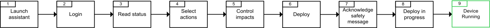

To deploy to run devices, first open the Deploy and Diagnostic editor. Then depending how many devices need to be deployed, follow one of these two processes:
To deploy to run one logical device instance, the user can:
Manually perform one after the other all the actions following the workflows listed in the topic Typical Operating State Workflows.
Automatically perform all the same actions with the Deploy to Run Assistant. This way, no steps are forgotten during the deployment process.
Thus, to deploy to run one logical device instance using the Deploy to Run Assistant, follow the next steps:

| Step | Action | Result |
|
Launch assistant |
Click on Deploy to Run Assistant of the wanted logical device instance. |
A first dialog box opens requesting to login the logical device instance to the device, if not already logged in. |
|
Login |
If not already logged in, click on Login to login into the device. If requested, enter the credentials. |
The Deploy to Run Assistant dialog box opens |
|
Read status |
Check, in the section Device Status, the current status of the logical device instance given with:
|
|
|
Select actions |
Choose, in the section Action to apply, the actions to reach the Running status and to have the wanted status. |
By default, some actions are already selected. These actions will bring the device to run without reboot. However, the user can select or deselect any individual action. This will:
|
|
Control impacts |
Check, in the section Impacts, all the impacts that the current selection of actions will have on the device. |
If the impacts are:
|
|
Deploy |
Click on Deploy to deploy or Cancel to cancel the deployment. |
Either:
|
|
Acknowledge safety message |
Read each safety message and for those with choose actions, pick one answer. Once done, select or deselect the check boxes:
After all the choices of the safety messages made and the check boxes selected, the Deploy deployed button will become enable. Click on it to start the deployment. |
The deployment is starting |
|
Deploy in progress |
The actions previously selected will then be automatically performed one after the other. During the deployment, an addition information bar is added at the bottom of the Deploy and Diagnostic editor. This information bar is showing:
|
Once all completed, the device is either:
|
|
Device Running |
Click on Validate to confirm the switch to the Running state. This confirmation dialog box can be hidden by clicking on Do not show next time before validate. At next the deployments, a button RUN application is added into the information bar instead of the dialog box. A confirmation is still required as long as the check box in the safety message dialog box is selected.
NOTE: Switch back to the confirmation dialog box by deselected the check box in the Deploy To Run Assistant parameter of EcoStruxure Automation Expert.
|
At the point, the device is now running and ready to operate. |
For any reason, the deployment process can be canceled by pressing the Cancel button in these places:
In the Deploy to Run Assistant dialog box.
In the dialog box with the safety messages.
In the RUN application dialog box.
In the progress bar once the deployment in on-going. If canceled in this case, the action on going will be completed and the deployment will stop there.
At the end of the deployment process, find all the summary of the deployment in the Output and Message log pads.
To deploy to run several logical device instances at once, follow the next steps:
In the Deploy and Diagnostic editor, select all the logical device instances wanted by ticking their button, located on the left of their line.
Compile these logical device instances and ensure that there are no error by selecting Compile in the common drop down list of actions.
Log in to all the logical device instances by clicking on the common button Login.
Enter the credentials of the logical device instances requesting them. The logical device instances are now logged in to their devices.
Now, perform several actions with the command buttons, as described in the topic Deploy and Diagnostic Editor, to reach the Run state.
The list of all the actions to perform and the order to do them is given in the topic Typical Operating State Workflows.
Once all the actions done, the devices will be running and ready to operate.